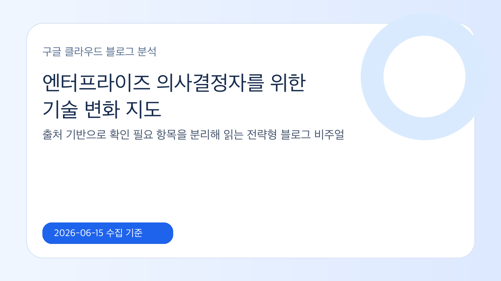
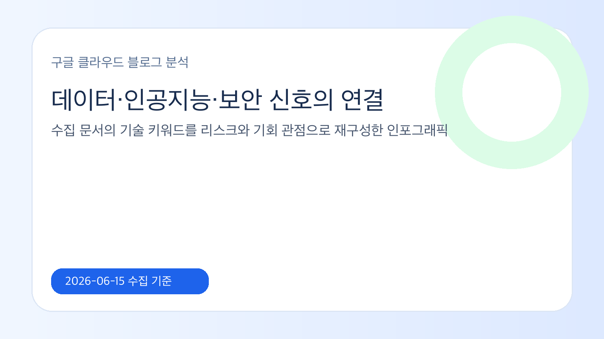

데이터 공유를 개선할 수 있는 오픈 지식 형식
오픈 지식 형식을 중심으로 데이터 공유의 표준화 가능성을 설명한 문서입니다. 실제 적용 범위와 생태계 채택 수준은 추가 확인이 필요합니다.
- 오픈 지식 형식
- 데이터 공유
- 구조화 메타데이터
- 지식 교환
최신 저장 문서 대체 사용: 신규/24시간 출처 없음, 당일 신규성 확인 필요 기반으로 엔터프라이즈 인공지능, 데이터, 클라우드 의사결정자가 확인해야 할 변화와 확인 필요 항목을 분리했습니다.

이번 글은 수집된 구글 클라우드 블로그 원문과 로컬 지식형 마크다운에 근거합니다. 신규 저장 문서가 없거나 최근 24시간 출처가 부족한 경우에는 같은 날 신규성 판단을 확정하지 않고 확인 필요로 표시했습니다.
오픈 지식 형식을 중심으로 데이터 공유의 표준화 가능성을 설명한 문서입니다. 실제 적용 범위와 생태계 채택 수준은 추가 확인이 필요합니다.
기밀 인공지능 워크로드를 지원하기 위한 보안 실행 환경과 하드웨어 기반 신뢰 경계를 설명한 문서입니다. 지원 조건과 적용 범위는 공식 문서 확인이 필요합니다.
관리형 아파치 스파크 성능 개선과 실행 엔진 관련 기술 변화를 설명한 문서입니다. 성능 수치와 적용 조건은 워크로드별 검증이 필요합니다.
구글 보안 운영 에이전트를 활용한 위협 탐지와 대응 흐름을 설명한 문서입니다. 조직별 로그, 권한, 대응 절차와의 연결은 확인이 필요합니다.

이번 입력은 최신 저장 문서 대체 사용: 신규/24시간 출처 없음, 당일 신규성 확인 필요 기준 4개 문서를 사용했습니다. 반복적으로 보이는 서비스·기술은 아파치 스파크, 아파치 스파크용 관리형 서비스, 기밀 컴퓨팅, 제미나이, 제미나이 및 데이터 분석 워크플로우 연계 가능성은 원문 맥락상 확인 필요, 구글 클라우드 보안, 인텔 신뢰 실행 확장, 장기 지식 위키 패턴, 라이팅 엔진, 맨디언트입니다.
수집 문서가 직접 보여주는 범위 안에서는 데이터 교환성, 인공지능 실행 환경, 보안 통제 또는 관리형 서비스 성능 개선이 기업 검토 주제로 나타납니다. 신규성이나 적용 범위가 불명확한 항목은 확인 필요로 남겼습니다.
의사결정자는 기능 이름보다 적용 조건을 먼저 확인해야 합니다. 원문 발행일, 지원 리전, 가격, 권한 모델, 기존 데이터 거버넌스와의 충돌 가능성을 같은 표로 점검하는 방식이 안전합니다.
관찰된 사실은 원문 게시물의 제목, 요약, 서비스 키워드에서만 도출했습니다. 한국 기업 관점에서는 규제·보안·데이터 위치·기존 클라우드 계약 조건을 함께 확인해야 하며, 수집 데이터만으로 판단하기 어려운 부분은 확인 필요로 남기는 것이 안전합니다.
| 검토 영역 | 관찰된 근거 | 의사결정 포인트 |
|---|---|---|
| 데이터 | 아파치 스파크 | 데이터 공유·처리 성능·표준 포맷 변화가 기존 데이터 거버넌스와 충돌하지 않는지 확인합니다. |
| 인공지능 | 제미나이 | 모델·실행 환경·보안 경계가 내부 권한 모델과 감사 요구사항을 충족하는지 검토합니다. |
| 보안·거버넌스 | 맨디언트 | 접근 통제, 위협 탐지, 로그 보존, 책임 소재를 배포 전 체크리스트로 분리합니다. |
기능 단위 도입보다 원문 근거, 지원 조건, 보안 검토, 비용 영향을 한 번에 비교하는 의사결정 표를 먼저 만드십시오. 단, 본 실행에서 확인하지 못한 세부 조건은 확인 필요입니다.
신규 서비스나 기능은 권한, 데이터 이동, 로그, 비용 예측, 장애 대응 절차가 준비되지 않으면 도입 효과보다 운영 리스크가 커질 수 있습니다. 원문이 제공하지 않는 수치나 고객 효과는 추정하지 않았습니다.